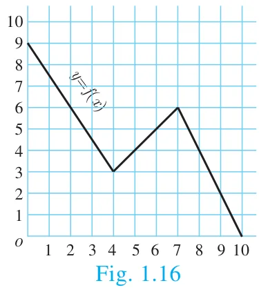
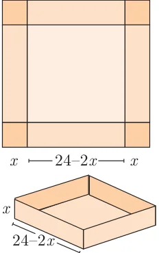

- Let \(f = \{(x, y) \mid x, y \in N \text{ and } y = 2x\}\) be a relation on N. Find the domain, co-domain and range. Is this relation a function?
- Let \(X = \{3, 4, 6, 8\}\). Determine whether the relation \(R = \{(x, f(x)) \mid x \in X, f(x) = x^2 + 1\}\) is a function from \(X\) to \(N\)?
- Given the function \(f : x \to x^2 - 5x + 6\), evaluate
- \(f(-1)\)
- \(f(2a)\)
- \(f(2)\)
- \(f(x - 1)\)
- A graph representing the function \(f(x)\) is given in Fig. 1.16 it is clear that \(f(9) = 2\).

- Find the following values of the function
- \(f(0)\)
- \(f(7)\)
- \(f(2)\)
- \(f(10)\)
- For what value of \(x\) is \(f(x) = 1\)?
- Describe the following (i) Domain (ii) Range.
- What is the image of 6 under \(f\)?
- Find the following values of the function
- Let \(f(x) = 2x + 5\). If \(x \neq 0\) then find \(\dfrac{f(x+2) - f(2)}{x}\).
- A function \(f\) is defined by \(f(x) = 2x - 3\)
- find \(\dfrac{f(0) + f(1)}{2}\).
- find \(x\) such that \(f(x) = 0\).
- find \(x\) such that \(f(x) = x\).
- find \(x\) such that \(f(x) = f(1 - x)\).
- An open box is to be made from a square piece of material, 24 cm on a side, by cutting equal squares from the corners and turning up the sides as shown (Fig. 1.17). Express the volume \(V\) of the box as a function of \(x\).

Fig. 1.17 - A function \(f\) is defined by \(f(x) = 3 - 2x\). Find \(x\) such that \(f(x^2) = (f(x))^2\).
- A plane is flying at a speed of 500 km per hour. Express the distance ‘\(d\)’ travelled by the plane as function of time \(t\) in hours.
- The data in the adjacent table depicts the length of a person forehand and their corresponding height. Based on this data, a student finds a relationship between the height \((y)\) and the forehand length \((x)\) as \(y = ax + b\), where \(a, b\) are constants.
Length ‘\(x\)’ of forehand (in cm) Height ‘\(y\)’ (in inches) 35 56 45 65 50 69.5 55 74 - Check if this relation is a function.
- Find \(a\) and \(b\).
- Find the height of a person whose forehand length is 40 cm.
- Find the length of forehand of a person if the height is 53.3 inches.
Chapter 1 · Relations and Functions